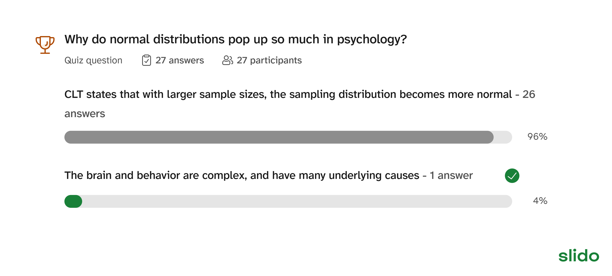

Create your lab5 folder, project, and lab5.Rmd

The first sentence is a technically a true statement, but the CLT is not only about the sampling distribution, and this does not answer the question.
The second option is correct. With many causes, numbers tend to “average out”, so most values become centered around a mean (CLT)
rnorm()rnorm()Does this look familiar?
Compare this to our simulated heights example from lab3.
We will simulate 100 experiments and take the mean height in each experiment. Each experiment will have a sample size of 20. We will calculate some descriptive statistics.
rnorm(mean=...,sd=...,n=...) to simulate heights
person1 <- rnorm(...), you can set the n variable to the desired sample size with all_people <- rnorm(n=20, ...)sim_means to store the mean heightstibble(column_name=sim_means)